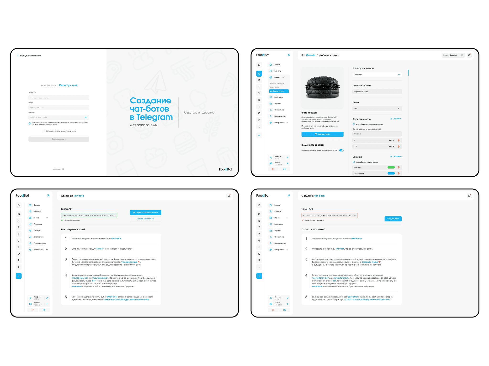
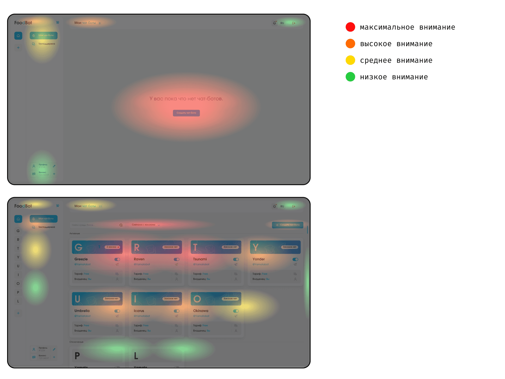
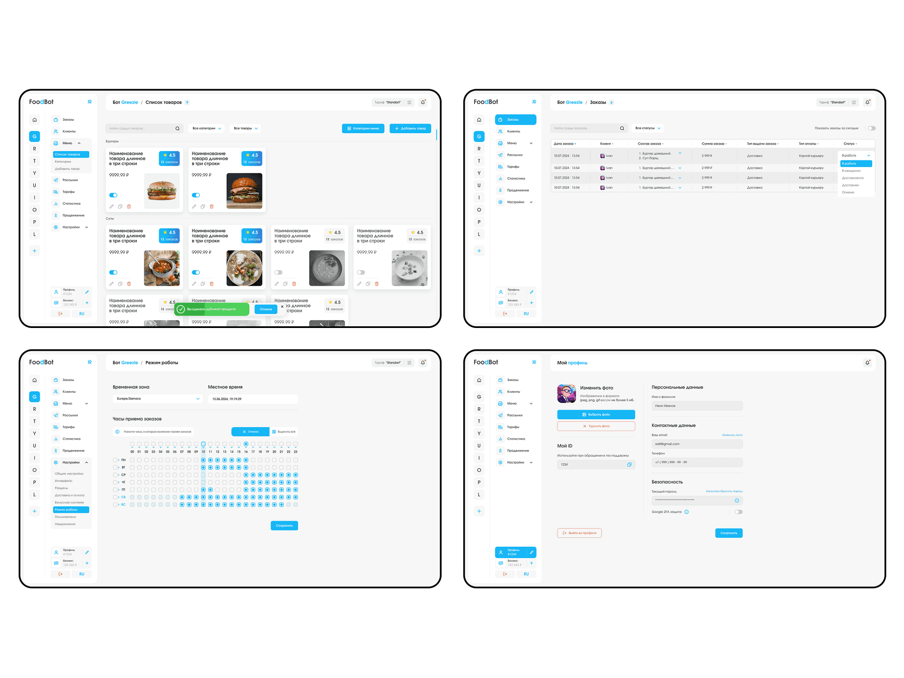
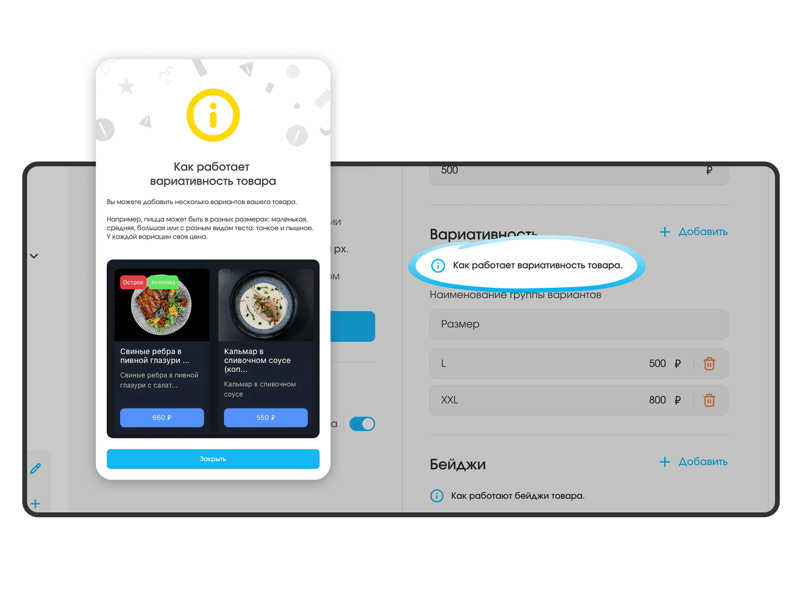
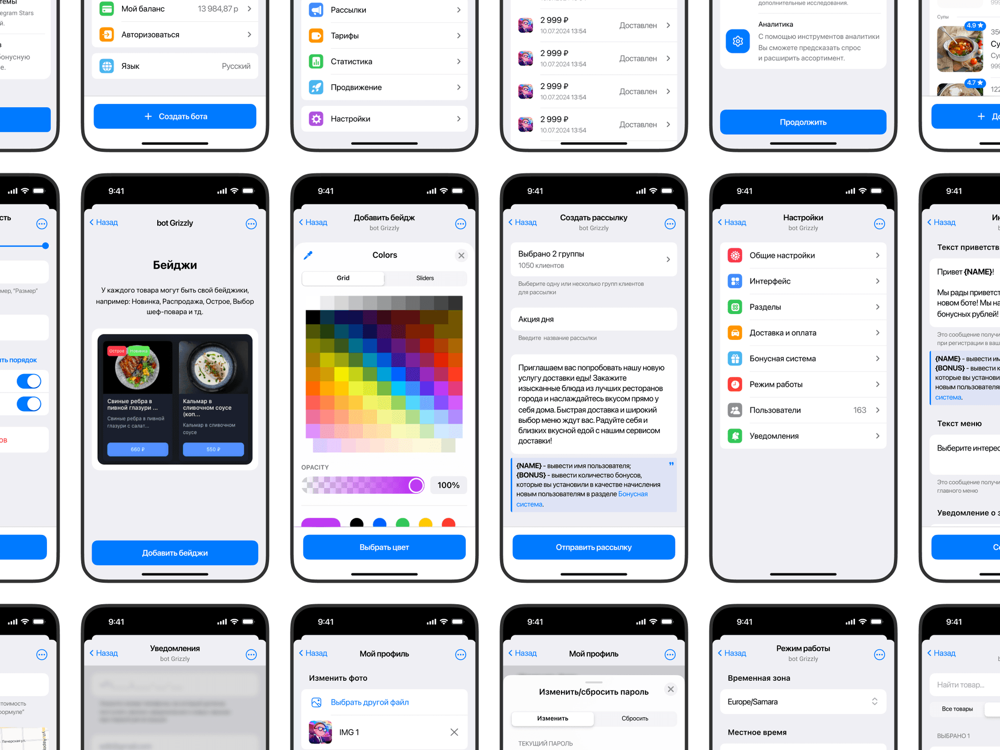
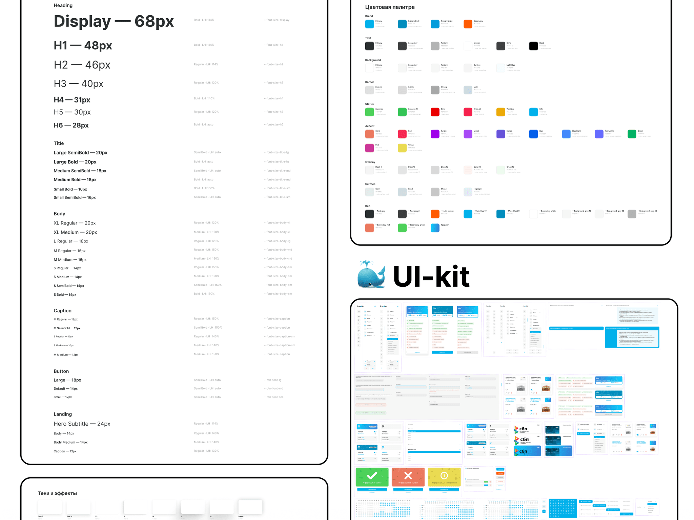
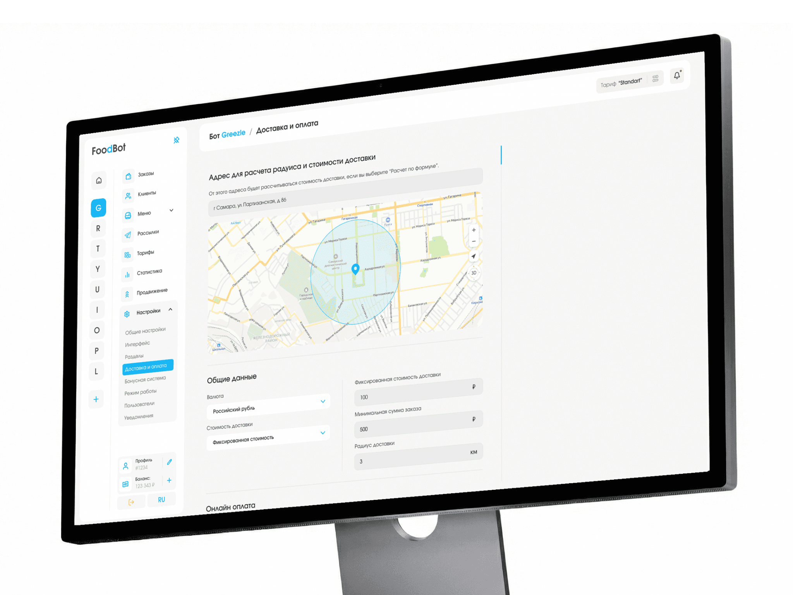
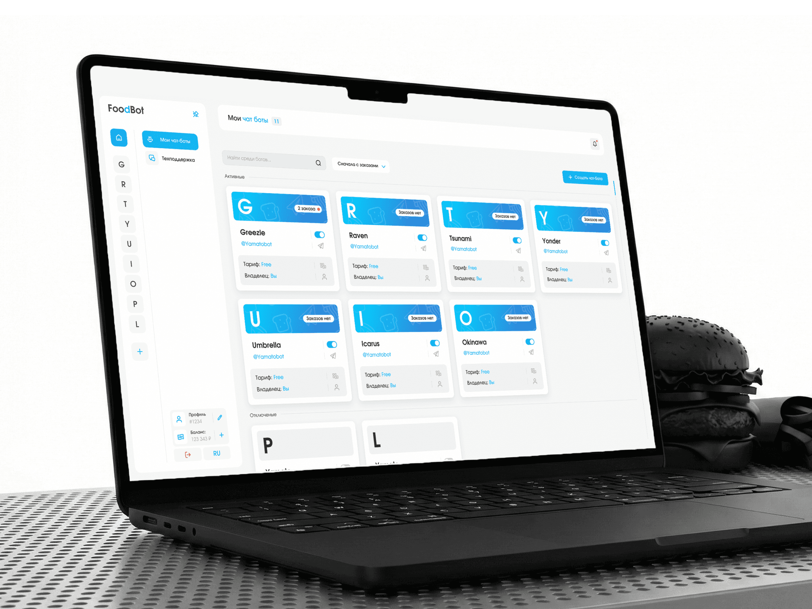

FoodBot
FoodBot is a SaaS platform that lets restaurants launch their own WebApp chatbots in Telegram to take food delivery orders — without writing any code.
in this case
-
The admin panel moved into Telegram — 40% fewer missed orders.
Stop list, prices and orders — from a smartphone, in a familiar messenger. -
A step-by-step guide instead of one scary field.
Five steps in plain language — 25% fewer onboarding drop-offs. -
Why I did not compete with rivals on the number of features.
Three hypotheses, the selection criteria and what I had to defend. -
A blue that did not read on white.
How a contrast check changed the main interface color.
 product design/b2b
product design/b2bProject at a glance
Role. The only designer on the team, responsible for the entire product design.
Timeline. 11 months.
Starting point. A redesign: the previous interface did not get café owners to launch a bot and take orders.
What I did. Research, user flows, the admin panel, the Telegram Mini App, the landing page, the design system and the developer handoff.
Outcome. Three platforms in one design system: ~174 admin panel screens, 150+ mini app screens and a landing page.
Task and constraints
Rework the UX/UI of the admin panel (account dashboard) for restaurant owners.
Business goals: more owners getting to a launched bot, fewer missed orders and fewer support requests.
Key requirement: the interface must be clear to people with no technical background — setting up a complex bot should feel as easy as filling in a social media profile.
Technical constraint from the client: the mobile admin works as a Telegram Mini App — inside Telegram’s built-in browser. It has its own system buttons, the look follows the user’s Telegram theme, and with the keyboard open there is little vertical space left.
What I found out
Audience. Owners of cafés, burger joints, sushi bars and coffee shops are always on the move and miss orders because they do not see notifications. Takeaway: management must be at hand, on the phone, with notifications.
Competitors. They offer flexible settings and lots of features but do not help complete the target action — the first setup drags on. Takeaway: the interface should lead people by the hand.
Interface language. Owners are put off by terms like “API token” and multi-level settings. Takeaway: technical steps need plain language.

Three hypotheses and how I chose
I compared the hypotheses on three criteria: does it lower the barrier for people without technical skills, does it solve missed orders, and what is the implementation cost.
A — more features than competitors. Win on capabilities. But new settings only raise the entry barrier that already scares people off. Implementation cost: high.
B — training and support. Video guides and fast support. But the complexity just moves to support, and missed orders remain. Implementation cost: low.
C — an interface that leads the way. A step-by-step guide instead of technical fields, the menu as visual cards, contextual hints and management from the phone in Telegram. Implementation cost: high.
I chose C: it reduces load and the time to launch a bot and moves management to where the owner spends the day — the phone. The risk: the mobile version in Telegram needed a lot of separate work; I took it to the review as a business decision.
Where I was wrong and what I changed
A blue that did not read on white. In the first version the main blue on a white background was not contrasting enough: captions, links and secondary buttons were hard to read, especially on a phone on the go. A contrast check of the layouts showed this. I adjusted the shade — text and controls now read confidently, and the color kept its brand character.
A check without an expensive test. Rather than wait for an A/B test, I built a tool that generates an attention heatmap for a specific audience. It confirmed that attention on key screens follows the intended flow — decisions went into development checked, not on faith.
Decisions and what they target
Connect a bot in 5 steps (UX). Instead of one intimidating input field — a numbered guide to working with BotFather, in plain language, with highlighted commands and links.
Targets: people do not get stuck at the first technical step — fewer onboarding drop-offs.

Screens for each stage of use (UX). While there are no bots, the center of the screen has one button — create your first bot. Once bots exist, attention shifts to their cards, filters and search, while the create button stays in the comfort zone.
Targets: the interface leads newcomers to activation and does not get in the way of experienced users.


Contextual hints (UX). Next to non-obvious settings — help triggers that open an explanation, sample data and a preview of the result.
Targets: the answer appears before people get confused — less setup time and fewer support requests.

Admin panel in a Telegram Mini App (UX/UI). Stop list, prices, mailings and orders — right from a smartphone. How this answers the Telegram constraint: the screens are built on Telegram’s native UI kit — system navigation, colors from the user’s theme and short forms that fit above the keyboard.
Targets: new orders arrive where the owner already spends the day — fewer missed orders.

Defending the design and handoff
I walked the client through the whole chain: from café owners’ pains to the decisions in the layouts.
Mobile comes first. Adapting to the Telegram Mini App needed separate work, but it is exactly what solves missed orders. Fewer settings in sight. Instead of a feature race, the interface wins because someone without technical skills can figure it out.
I handed over the layouts systematically: screens, states and modals are built with Auto Layout and linked to a UI kit with a design system; animations are annotated. The landing page, admin panel and mini app share one design system — new modules are added quickly without breaking the style.
How I work. For eleven months I was the only designer across three platforms, so I tied every decision to a business goal and argued for it myself, raising contentious ones openly, together with the risk.

Results
Product — how the product works and how people use it
Connecting a bot in 5 steps: onboarding drop-offs −25%.
Contextual hints: setup time −30%, support requests −20% — most questions are answered right in the interface.
Admin in a Telegram Mini App: missed orders −40% — the delivery control panel is now in your pocket.
Screens for each stage: newcomers are led to their first bot, experienced users keep quick access to management.
One design system for three platforms: new modules are developed 20% faster.
Communication — how the product conveys its value
Technical language became human: instead of an “API token” — clear steps with highlighted commands.
The interface looks like a familiar builder, not a “complex database” — owners see they can manage on their own.
The menu as visual cards: owners see the menu the way a guest will see it in the bot.
A contrasting, readable interface: after the blue fix, everything reads on the go, on a phone.
3 platforms · ~174 admin panel screens (94 + 80 responsive) · ~150+ mini app screens · 4 landing pages · 12 pages in Figma

How I used AI
Claude — collecting and analyzing data for the task. Workflows, documentation and reviews of competing platforms — pain clusters and a systemic market weakness: interfaces do not lead to the target action. The main gain is quality: data used to come from a limited set of external sources, while Claude covers an incomparably wider range, so the findings rest on a fuller picture. ≈ 5 minutes instead of up to 24 hours of manual search — dozens of times faster.
My own heatmap tool. With an AI model I built a tool that generates an attention heatmap for a specific audience — flows checked without an expensive A/B test.
Claude — segmenting and analyzing internal metrics. Breaking down platform metrics by user segment and funnel stage. ≈ 2 minutes instead of up to 2 hours of automation in Excel.
Claude + Figma Agent — preparing for development. Styles, layer naming, responsive versions, the design system and components in every state, checking for missing screens and states, checking the user-flow logic and contrast, and developer comments. ≈ 1 hour with edits instead of 16 hours of solid work.
AI takes over data collection and routine work; the decisions are mine, and I check them.